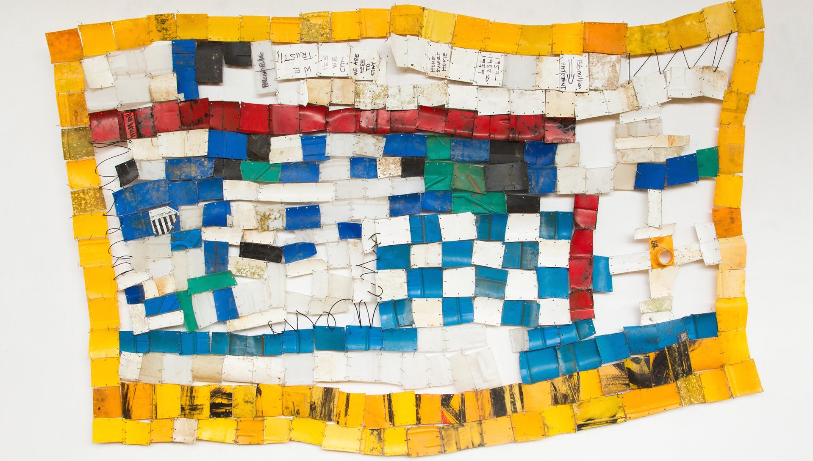

Not surprisingly, I also struggle with depression and social anxiety. For years I’ve been bouncing from therapist to therapist, constantly weighing the pros and cons of going on medication, and waking up most mornings in the throes of an all-consuming vacuum of existential dread. And though I don’t believe my eating habits are directly responsible for my bouts with despondency and dejection, ordering take out three times a day on the Internet—rarely exchanging so much as a single word with another living person—has indeed contributed to some serious lifestyle imbalances and a growing sense of loneliness and isolation.
For the past few months, however, I’ve finally started to cook for myself. I’ve found that the physical act of cooking alleviates symptoms of stress and anxiety almost immediately. Food is such an inextricable part of the human condition, however, that the simple sensation of having some meat and vegetables sizzling on a pan is also affecting me on a deeper emotional level. Even the often arduous process of prepping, grocery shopping, and washing dishes has added a level of structure to my life and gradually normalized my daily routine.
“I happen to think it’s brilliant to try to engage someone [who is depressed] in cooking. For the time that you’re doing it, it really does circumvent the symptoms of depression: the inertia, the lack of energy, the lack of focus, the lack of interest,” Norman Sussman, the director of the Treatment Resistant Depression Program at the NYU School of Medicine, tells me. “Like you, I draw a tremendous amount of stress relief and satisfaction from cooking. It takes all your attention. For the time that you’re doing it, there’s nothing else that you’re thinking about.”
Cooking often falls under the broad umbrella of behavioral activation therapy (or BA, as it’s commonly known). The treatment, which was first developed in the 1970s at the University of Oregon, seeks to alleviate symptoms of depression by identifying the environmental sources of one’s emotional suffering. Therapists then help patients break free of the bonds of their inertia and passivity by helping them re-engage in normal, everyday activities. When stuck in depression, one tends to withdraw further and further from life, perpetuating a downward spiral of detachment and despair. It makes sense that any positive action—whether it be going to the gym, or finding a new hobby, or setting to work in the kitchen—could potentially counteract that process.
“Somebody who is suffering from clinically significant depression, many of them report brief feelings of relief when they do vigorous exercise. They’ll tell you they feel better when they jog; they feel better when they go on a treadmill. But it’s not a durable effect. It’s transient,” Sussman says. “I think anything where you accept responsibility for producing something that’s tangible at the end of the process, that other people will benefit from, or that you personally will benefit from, it’s going to be a therapeutic tool.”
Sussman is primarily a psychiatrist and a psychopharmacologist, and though he says antidepressants only work fully in one-third of cases, he believes a combination of medication and cognitive therapy is the most effective method for combatting depression in 2016. By the end of our conversation, he suggests I consider taking Wellbutrin, a “pretty clean drug” that’s used to treat major depressive disorder and season affective disorder.
Still, there is perhaps something especially primal and atavistic about the preparation of food, a deeply seeded component of our DNA that running on a treadmill or lying on a therapist’s couch can’t always tap into. Learning to cook one’s own meals not only supplies a fleeting distraction from sorrow and suffering, but represents a set of skills necessary for leading a full and independent life. The way we procure our food has indeed become increasingly depersonalized and mechanic over the years, but cooking, even with the goal of making the simplest of recipes, operates at a much more human rhythm.
Patricia D’Allessio is a professional caterer and personal chef who, up until last year, ran a cooking program for patients at Newport Academy, a treatment facility for teenagers who struggle with drug addiction and mental illness. “We can save your teen,” the center’s website assures its parents. She now runs a similar program at Westport House, a sober living home for young men in southwestern Connecticut.
“You’re looking specifically at depression and anxiety, but people with eating disorders, ADHD, self-esteem issues, stress, socialization. I mean, there are so many aspects to cooking,” D’Allessisouo tells me. “It’s this sensory awareness of everything: taste, touch, smell, sound, sight. You have to pay attention, and I saw that first hand with them.”
The cooking lessons have also served to supply patients with a modicum of control amid the powerlessness associated with their conditions.“You can make [your meal] the way that you want it to your taste and that’s huge.” D’Allessio says. “It gives them ownership. [They think,] ‘Maybe I can’t control my addiction or my depression or my eating disorder, but I can certainly control what I put in my food.’”
Of course, cooking is by no means a silver bullet for overcoming depression, anxiety and substance abuse, nor is it a replacement for medication and cognitive therapy. Sussman warns that there’s diurnal variation in depression, meaning that in almost all cases patients report feeling their symptoms gradually subside as the day goes on. The ability to wake up and cook breakfast in the morning, for instance, is a more accurate indication of one’s progress than preparing dinner after work. Still, many who struggle with depression simply lack the ability to commit to a new, regimented behavioral pattern altogether.
“One of the hardest things as a psychiatrist is to look at the patient across the desk, tell him to do something that you know will make him feel better, even temporarily, and they come back for their next visit and they didn’t do it,” Sussman says. “It’s sort of like someone who’s suffered a sports injury and they’re recovering from a broken leg. You can tell them to walk. You can tell them to run. They just can’t.”
Over the years, as I’ve found myself plunging deeper and deeper into depression, the most basic tasks—like making an appointment to go see a therapist or even getting dressed—can feel like an impossible, Sisyphean ordeal. For some reason, cooking is one small change that’s stuck, allowing me a brief respite from myself. I believe I’d be wise to hold onto it as long as I can.
“People who are depressed, essentially they have no sense of the future getting any better than it is. They feel hopeless,” Sussman explains. “For the time that they’re cooking, they’re not thinking about the future. It’s sort of like living for today.”
Learning to Cook Is Helping Me Battle Depression
“Over 8 million people in New York City and we help you avoid them all.”
For the last several months, the New York City subway system has showcased slogans like this one from the online food delivery service Seamless, promising commuters “brunch without all the annoying brunch people” and urging them to “cook when they’re dead.” As someone who has ordered hundreds of meals through Seamless since moving to Brooklyn in 2013, spending thousands of dollars in the process, I can assure you that this is not false advertising. I have avoided cooking like I avoid Times Square. I do have a healthier relationship with my delivery guy than most human beings. My dating profile does list “food delivery” as a turn on. (Well, it would if I had one.)
For the last several months, the New York City subway system has showcased slogans like this one from the online food delivery service Seamless, promising commuters “brunch without all the annoying brunch people” and urging them to “cook when they’re dead.” As someone who has ordered hundreds of meals through Seamless since moving to Brooklyn in 2013, spending thousands of dollars in the process, I can assure you that this is not false advertising. I have avoided cooking like I avoid Times Square. I do have a healthier relationship with my delivery guy than most human beings. My dating profile does list “food delivery” as a turn on. (Well, it would if I had one.)
Illustration: Nanna Prieler

Prison Yoga Is Helping Inmates Transcend Their Cells

Greenery (or Even Photos of Trees) Can Make Us Happier

The Ghanaian turning thousands of discarded plastic bottles into art